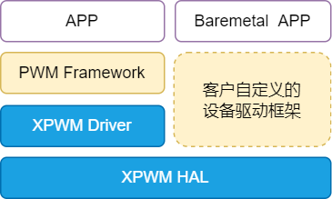

设计说明
30 Oct 2024
Read time: 2 minute(s)
源码说明
源代码位于 bsp/artinchip/：
-
bsp/artinchip/drv/xpwm/drv_xpwm.c，XPWM/PWM Driver 层实现
-
bsp/artinchip/hal/xpwm/hal_xpwm.c，XPWM/PWM HAL 层实现
-
bsp/artinchip/include/hal/hal_xpwm.h，XPWM/PWM HAL 层接口头文件
模块架构
XPWM/PWM 驱动 Driver 层采用 RT-Thread 的 PWM 设备驱动框架。HAL 层也可以支持 Baremetal 方式或配合自定义的设备驱动框架进行使用。

关键流程设计
初始化流程
XPWM/PWM 驱动的初始化接口通过 INIT_DEVICE_EXPORT(drv_xpwm_init) 完成，主要是通过调用
PWM 子系统的接口 rt_device_pwm_register() 注册一个 PWM 设备。
XPWM/PWM 控制器的初始化过程，主要步骤有：
-
初始化模块的 clk
-
初始化模块的默认参数
-
向设备框架中注册 PWM 设备
数据结构设计
struct aic_xpwm_arg
属于 HAL 层接口，记录每一个 PWM
通道的配置信息：
struct aic_xpwm_arg {
u16 available;
u16 id;
u32 tb_clk_rate;
u32 freq;
u32 period;
u32 duty;
s32 def_level;
u32 dma_en;
u32 fifo_en;
u32 fifo_th;
u32 pul_limit_en;
enum xpwm_polarity polarity;
struct xpwm_int_s xpwm_int;
struct aic_xpwm_transfer_info t_info;
};Driver 层接口设计
以下接口是 PWM 设备驱动框架需要的标准接口。
struct rt_pwm_ops
{
rt_err_t (*control)(struct rt_device_pwm *device, int cmd, void *arg);
};| 函数原型 | static rt_err_t drv_xpwm_control(struct rt_device_pwm *device, int cmd, void *arg) |
|---|---|
| 功能说明 | （类似 ioctl 的接口方式）配置一个 XPWM/PWM 通道 |
| 参数定义 |
device - 指向 XPWM/PWM 设备的指针
cmd - ioctl 命令码
arg - 命令参数，指向 struct rt_pwm_configuration 结构的指针
|
| 返回值 | 0，成功； < 0，失败 |
| 注意事项 | - |
HAL 层接口设计
HAL 层的函数接口声明存放在 hal_xpwm.h
中，主要接口有：
void hal_xpwm_ch_init(u32 ch, u32 default_level, enum xpwm_polarity polarity); int hal_xpwm_set(u32 ch, u32 duty_ns, u32 period_ns, u32 pulse_cnt); int hal_xpwm_get(u32 ch, u32 *duty_ns, u32 *period_ns); int hal_xpwm_enable(u32 ch); int hal_xpwm_disable(u32 ch); u32 hal_xpwm_int_stat(u32 ch); void hal_xpwm_int_clr(u32 ch, u32 mask); int hal_xpwm_set_fifo(u32 ch, u32 pul_num, u32 pul_prd, u32 pul_cmp); void hal_xpwm_cnt_en(u32 ch, u32 val); int hal_xpwm_is_enable(u32 ch); void hal_xpwm_resume(u32 ch); void hal_xpwm_fifo_flush(u32 ch); void hal_xpwm_irq_en_set(u32 ch, struct xpwm_int_s *xpwm_int); bool hal_ch_is_xpwm(u32 ch); int xpwm_cal_prd_duty(u32 ch, u32 duty_ns, u32 period_ns); #if defined (AIC_XPWM_FIFO_MODE) && defined (AIC_DMA_DRV) void hal_xpwm_dma_config(u32 ch, dma_async_callback callback, void *callback_param); #endif
提示：
硬件上 PWM 与 XPWM 为同一模块共 24 路。 驱动中的 PWM 是使用 XPWM 的 PWM 功能来实现，软件上划分 0-7 路为 XPWM， 8-23 路为 PWM。